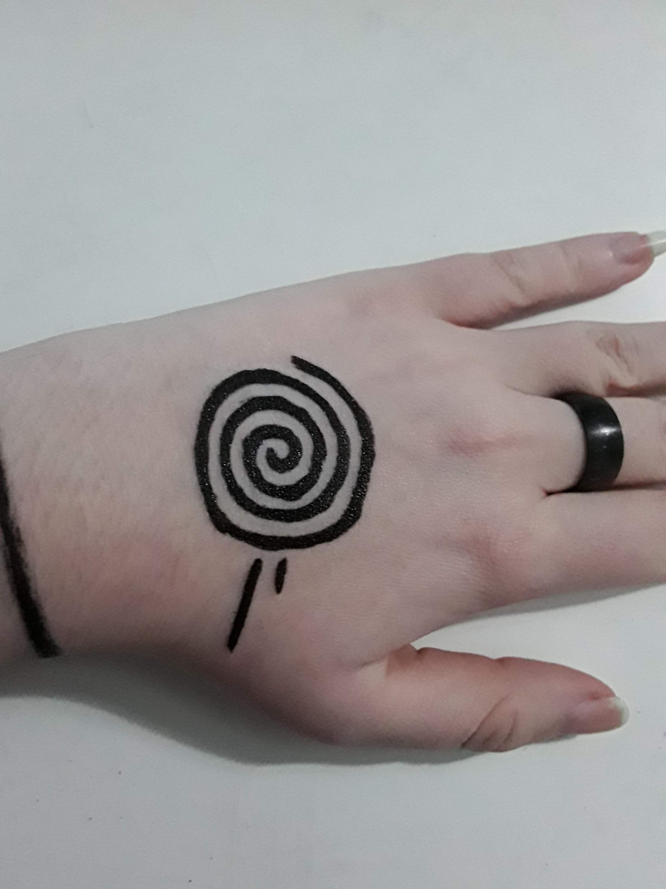
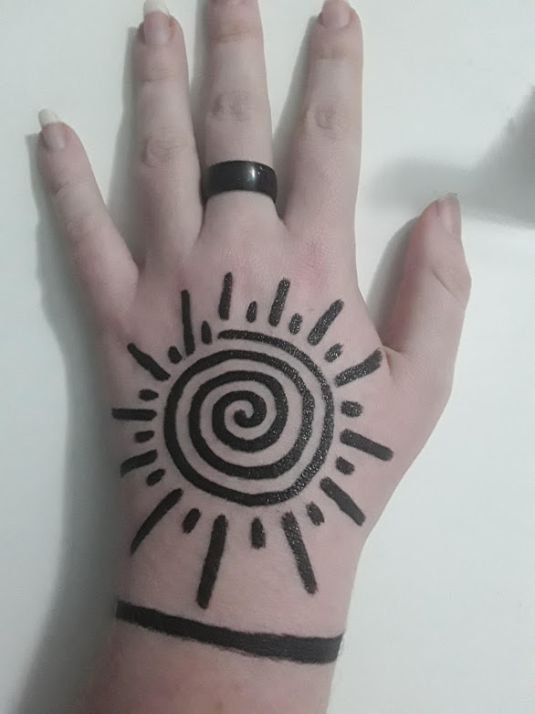
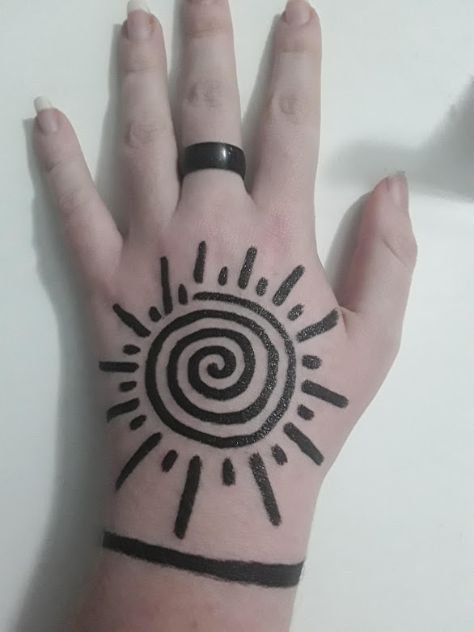

Sense most things have good and bad sides it is up to personal preference.
Here is a list of materials to help you pick what to use.
| Material | Positive | Negative | Genaral |
|---|---|---|---|
| Sharpie |
- Nice color pigment - Easy to draw with |
- Bleeds - Looks fuzzy |
- Stays for a good amount of time |
| Ball Point pen |
- Easy to get your hands on |
- Looks patchy - Harder to draw with |
- Thin lines |
| Gel Pen |
- Nice color pigment -Easy to draw with |
- Smudges - Not long lasting |
- Thin lines - Really easy to wash off |
| Chalk marker |
- Vibrant - Easy to draw with |
- Not long lasting |
- Makes thicker lines - Really easy to wash off |
| Dry erase marker |
- Easy to draw with - Easy to get your hands on |
- Sheer | - Easy to wash off |
| Paint Pen |
- Nice color pigment - Easy to draw with |
- Hard to get off - Harder to find |
- Will stay on for the long run |
Another quick thing metallic markers work well most of the time but I don't have any specific brands
The list of pictures going left to right goes
- Freshly drawn
- Smudged
- Getting wet
- Scrubbed with soap and water
Paint pen is my personal favorite so I will be mostly using that
I have alot less to say about this
It matters mostly on what you like and your skin tone
Here is some colors on my skin
The first step of drawing the sun is finding the center of your hand and drawing a dot
You can just eyeball it because it doesn't have to be perfect
You are to want to start to draw a spiral starting at the dot
Mine are always counter clockwise but it doesn’t really matter
I don't have many tips for drawing the spiral other than: Practice and Thicker markers are more forgiving
Finish off the spiral until you are happy with the size
Don't forget you will still need to draw the lines around it
A trick to make it look circler
Line up the end with the direction the beginning is pointed
For drawing the lines you pick a point and draw a line going out from the spiral
Then draw a smaller line next to the previous
Continue doing this until the spiral is surrounded
Now you have finished the spiral sun
You can also add a ring or bracelet to help frame it
You can do a lot to customize it in tons of different ways to fit your style more
Here are some examples of customized suns.
 
